The most common task of a simulation program is to compute the S parameters of an arbitrary network that consists of many elementary components connected to each other. To perform this, one can build a large matrix containing the S parameters of all components and then use matrix operations to solve it. However this method needs heavy algorithms. A more elegant possibility was published in [2]. Each step computes only one connection and so unites two connected components to a single S parameter block. This procedure has to be done with every connection until there is only one block left whose S parameters therefore are the simulation result.
Connecting port  of circuit
of circuit
 with port
with port  of
circuit
of
circuit
 , the new S-parameters are
, the new S-parameters are
If more than two ports are connected at a node, one have to insert one or more ideal tee components. Its S-parameters write as follows.
| 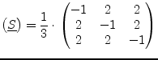 | (1.17) |
For optimisation reasons it may be desirable to insert a cross if at least four components are connected at one node. Its S-parameters write as follows.
| 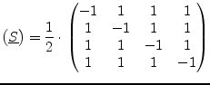 | (1.18) |
The formulas (1.14), (1.15) and (1.16) were obtained using the ``nontouching-loop'' rule being an analytical method for solving a flow graph. A few basic definitions have to be understood.
A ``path'' is a series of branches into the same direction with no node touched more than once. A paths value is the product of the coefficients of the branches. A ``loop'' is formed when a path starts and finishes at the same node. A ``first-order'' loop is a path coming to closure with no node passed more than once. Its value is the product of the values of all branches encountered on the route. A ``second-order'' loop consists of two first-order loops not touching each other at any node. Its value is calculated as the product of the values of the two first-order loops. Third- and higher-order loops are three or more first-order loops not touching each other at any node.
The nontouching-loop rule can be applied to solve any flow graph. In
the following equation in symbolic form  represents the ratio of
the dependent variable in question and the independent variable.
represents the ratio of
the dependent variable in question and the independent variable.
In eq. (1.19)
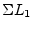 stands for the sum of all
first-order loops,
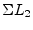 is the sum of all second-order
loops, and so on.  ,
,  , 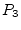 etc., stand for the
values of all paths that can be found from the independent variable to
the dependent variable.
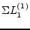 denotes the sum of those
first-order loops which do not touch (hence the name) the path of
, 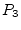 etc., stand for the
values of all paths that can be found from the independent variable to
the dependent variable.
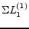 denotes the sum of those
first-order loops which do not touch (hence the name) the path of
 at any node,
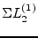 denotes then the sum of
those second-order loops which do not touch the path
at any node,
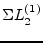 denotes then the sum of
those second-order loops which do not touch the path  at any
point,
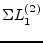 consequently denotes the sum of those
first-order loops which do not touch the path of
at any
point,
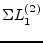 consequently denotes the sum of those
first-order loops which do not touch the path of  at any point.
Each path is multiplied by the factor in parentheses which involves
all the loops of all orders that the path does not touch.
at any point.
Each path is multiplied by the factor in parentheses which involves
all the loops of all orders that the path does not touch.
When connecting two different networks the signal flow graph in
fig. 1.2 is used to compute the new S-parameters.
With equally reference impedances on port  and port
and port  the
relations
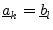 and
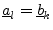 are satisfied.
the
relations
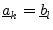 and
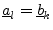 are satisfied.
There is only one first-order loop (see fig. 1.3) within this signal flow graph. This loops value yields to
| 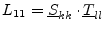 | (1.20) |
The paths that can be found from the independent variable 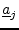 to the dependent variable 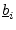 (as depicted in fig. 1.4) can be written as
| 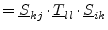 | (1.21) | |
| 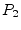 | 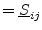 | (1.22) |
Applying the nontouching-loop rule, i.e. eq. (1.19), gives the new S-parameter 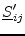
| 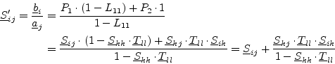 | (1.23) |
The only path that can be found from the independent variable to the dependent variable 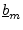 (as depicted in fig. 1.4) can be written as
| 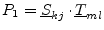 | (1.24) |
Thus the new S-parameter 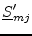 yields to
| 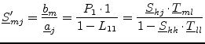 | (1.25) |
When connecting the same network the signal flow graph in
fig. 1.5 is used to compute the new S-parameters.
With equally reference impedances on port  and port
and port  the
relations
and
are satisfied.
the
relations
and
are satisfied.
There are three first-order loops and a second-order loop (see fig. 1.6) within this signal flow graph. These loops' values yield to
| 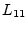 | 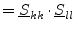 | (1.26) |
| 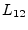 | 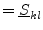 | (1.27) |
| 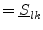 | (1.28) | |
| 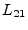 | 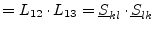 | (1.29) |
There are five different paths that can be found from the independent variable to the dependent variable (as depicted in fig. 1.7) which can be written as
| (1.30) | ||
| 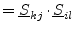 | (1.31) | |
| 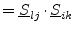 | (1.32) | |
| (1.33) | ||
| 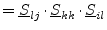 | (1.34) |
Thus the new S-parameter yields to
| 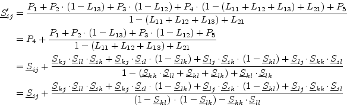 | (1.35) |
This short introduction to signal flow graphs and their solution using the nontouching-loop rule verifies the initial formulas used to compute the new S-parameters for the reduced subnetworks.
The implemented algorithm for the S-parameter analysis calculates S-parameters in terms of the ground node. In order to allow differential S-parameters as well it is necessary to insert an ideal impedance transformer with a turns ratio of 1:1 between the differential port and the device under test.
The S-parameter matrix of the inserted ideal transformer being a three port device can be written as follows.
| 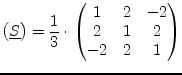 | (1.36) |
This transformation can be applied to each S-parameter port in a circuit regardless whether it is actually differential or not.
It is also possible to do the impedance transformation within this step
(for S-parameter ports with impedances different than  ). This can
be done by using a transformer with an impedance ration of
). This can
be done by using a transformer with an impedance ration of
| 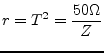 | (1.37) |
With  being the S-parameter port impedance. The S-parameter matrix of
the inserted ideal transformer now writes as follows.
being the S-parameter port impedance. The S-parameter matrix of
the inserted ideal transformer now writes as follows.
| 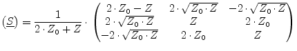 | (1.38) |
With  being the new S-parameter port impedance and
being the new S-parameter port impedance and  being
being  .
.